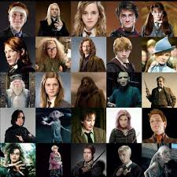

Harry Potter
Harry Potter, fictional character, a boy wizard created by British author J.K. Rowling. His coming-of-age exploits were the subject of seven enormously popular novels (1997–2007), which were adapted into eight films (2001–11); a play and a book of its script appeared in 2016.
Author: J. K. Rowling
Characters: Hermione Granger, Harry Potter, Lord Voldemort, MORE
Genre: Fantasy
Published: 26 June 1997 – 21 July 2007
AUTHOR
J.K. ROWLING
J.K. Rowling is the pen name of Joanne Rowling, who wrote Harry Potter. Rowling was born in Yate, England, lived in England, and then moved to Portugal to marry her first husband. Rowling was divorced living on welfare with a small baby when she had the idea for the Harry Potter story in 1990 while riding a train.
Joanne Rowling was born on 31st July 1965 at Yate General Hospital near Bristol, and grew up in Gloucestershire in England and in Chepstow, Gwent, in south-east Wales.
Her father, Peter, was an aircraft engineer at the Rolls Royce factory in Bristol and her mother, Anne, was a science technician in the Chemistry department at Wyedean Comprehensive, where Jo herself went to school. Anne was diagnosed with multiple sclerosis when Jo was a teenager and died in 1990, before the Harry Potter books were published. Jo also has a younger sister, Di.
The young Jo grew up surrounded by books. “I lived for books,’’ she has said. “I was your basic common-or-garden bookworm, complete with freckles and National Health spectacles.”
Jo wanted to be a writer from an early age. She wrote her first book at the age of six – a story about a rabbit, called ‘Rabbit’. At just eleven, she wrote her first novel – about seven cursed diamonds and the people who owned them.
Jo studied at Exeter University, where she read so widely outside her French and Classics syllabus that she clocked up a fine of £50 for overdue books at the University library. Her knowledge of Classics would one day come in handy for creating the spells in the Harry Potter series, some of which are based on Latin.
Her course included a year in Paris. “I lived in Paris for a year as a student,” Jo tweeted after the 2015 terrorist attacks there. “It’s one of my favourite places on earth.”
After her degree, she moved to London and worked in a series of jobs, including one as a researcher at Amnesty International. “There in my little office I read hastily scribbled letters smuggled out of totalitarian regimes by men and women who were risking imprisonment to inform the outside world of what was happening to them.” She said later. “My small participation in that process was one of the most humbling and inspiring experiences of my life.”
Jo conceived the idea of Harry Potter in 1990 while sitting on a delayed train from Manchester to London King’s Cross. Over the next five years, she began to map out all seven books of the series. She wrote mostly in longhand and gradually built up a mass of notes, many of which were scribbled on odd scraps of paper.
Taking her notes with her, she moved to northern Portugal to teach English as a foreign language, married Jorge Arantes in 1992 and had a daughter, Jessica, in 1993. When the marriage ended later that year, she returned to the UK to live in Edinburgh, with Jessica and a suitcase containing the first three chapters of Harry Potter and the Philosopher’s Stone.
In Edinburgh, Jo trained as a teacher and began teaching in the city’s schools, but she continued to write in every spare moment.
Having completed the full manuscript, she sent the first three chapters to a number of literary agents, one of whom wrote back asking to see the rest of it. She says it was “the best letter I had ever received in my life.”
The book was first published by Bloomsbury Children’s Books in June 1997, under the name J.K. Rowling.
The “K” stands for Kathleen, her paternal grandmother’s name. It was added at her publisher’s request, who thought a book by an obviously female author might not appeal to the target audience of young boys.
The book was published in the US by Scholastic under a different title (again at the publisher’s request), Harry Potter and the Sorcerer’s Stone, in 1998. Six further titles followed in the Harry Potter series, each achieving record-breaking success.
In 2001, the film adaptation of the first book was released by Warner Bros., and was followed by six more book adaptations, concluding with the release of the eighth film, Harry Potter and the Deathly Hallows Part 2, in 2011.
J.K. Rowling has also written two small companion volumes, which appear as the titles of Harry’s school books within the novels. Fantastic Beasts and Where to Find Them and Quidditch Through the Ages were published in March 2001 in aid of Comic Relief. In December 2008, a third companion volume, The Tales of Beedle the Bard was published in aid of her international children’s charity, Lumos.
In 2012, J.K. Rowling’s digital company Pottermore was launched, which became Wizarding World Digital in 2019. Pottermore Publishing continues to be the global digital publisher of Harry Potter, Fantastic Beasts and the Wizarding World.
Also in 2012, J.K. Rowling published her first novel for adults, The Casual Vacancy (Little, Brown), which has now been translated into 44 languages and was adapted for TV by the BBC in 2015.
Under the pseudonym Robert Galbraith, J.K. Rowling also writes crime novels, featuring private detective Cormoran Strike. The first of these, The Cuckoo’s Calling, was published to critical acclaim in 2013, at first without its author’s true identity being known. The Silkworm followed in 2014, Career of Evil in 2015, Lethal White in 2018, Troubled Blood in 2020, The Ink Black Heart in 2022 and The Running Grave in 2023. The series has also been adapted for television by the BBC and HBO.
J.K. Rowling’s 2008 Harvard commencement speech was published in 2015 as an illustrated book, Very Good Lives: The Fringe Benefits of Failure and the Importance of Imagination (Sphere), and sold in aid of Lumos and university-wide financial aid at Harvard.
In 2016, J.K. Rowling collaborated with playwright Jack Thorne and director John Tiffany on an original new story for the stage. Harry Potter and the Cursed Child Parts One and Two opened in London and is now playing in multiple locations around the world. The script book was published (Little, Brown) to mark the play’s opening in July 2016, and instantly topped the bestseller lists.
Also in 2016, J.K. Rowling made her screenwriting debut with the film Fantastic Beasts and Where to Find Them, a further extension of the Wizarding World, which was released to critical acclaim in November 2016. This was the first in a series of new adventures featuring Magizoologist Newt Scamander and set before the time of Harry Potter. The second film, Fantastic Beasts: The Crimes of Grindelwald, was released in 2018 and the third, Fantastic Beasts: The Secrets of Dumbledore was released in 2022.
The screenplays were published to coincide with each film release: Fantastic Beasts and Where to Find Them The Original Screenplay (2016), Fantastic Beasts: The Crimes of Grindelwald The Original Screenplay (2018) and Fantastic Beasts: The Secrets of Dumbledore The Complete Screenplay (2022).
In May 2020, J.K. Rowling’s fairy tale for younger children, The Ickabog, was serialised for free online for children during the Covid-19 pandemic in the summer of 2020, and is now published as a book illustrated by children, with her royalties going to her charitable trust Volant to benefit charities helping to alleviate social deprivation and assist vulnerable groups, particularly women and children.
Her latest children’s novel The Christmas Pig, a standalone adventure story about a boy’s love for his most treasured thing and how far he will go to find it, was published in 2021 and has been a bestseller in the UK, USA and Europe.
J.K. Rowling has been married to Dr Neil Murray since 2001. They live in Edinburgh with their son, David (born 2003) and daughter, Mackenzie (born 2005).
Honours & Awards
J.K. Rowling has received many honours and awards, including:
Companion of Honour, for services to literature and philanthropy, 2017
PEN America Literary Service Award, 2016
Freedom of the City of London, 2012
Hans Christian Andersen Award, Denmark, 2010
Chevalier de la Legion d’Honneur: France, 2009
Lifetime Achievement Award, British Book Awards, 2008
South Bank Show Award for Outstanding Achievement, 2008
James Joyce Award, University College Dublin, 2008
The Edinburgh Award, 2008
Commencement Day Speaker, Harvard University, USA, 2008
Blue Peter Gold Badge, 2007
WH Smith Fiction Award, 2004
Prince of Asturias Award for Concord, Spain, 2003
Order of the British Empire (OBE), 2001
Children’s Book of the Year, British Book Awards, 1998 and 1999
Booksellers Association Author of the Year, 1998 and 1999
CHARACTERS
